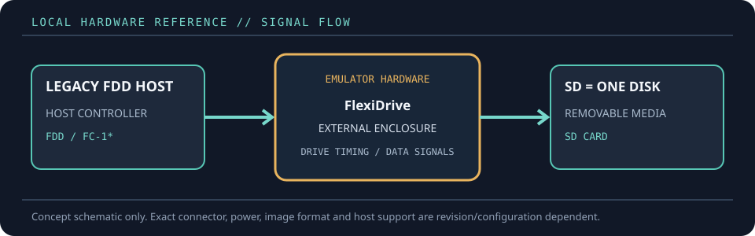

[ FLOPPY EMULATORS // IDENTIFIED HARDWARE ]
FlexiDriveS-SD Single-Volume Emulator
A model-specific record for a physical floppy-drive emulator. It distinguishes the emulator hardware, removable media and host-facing drive signals; firmware support alone does not establish compatibility with a particular machine.

MODEL IDENTIFICATION: PRODUCT RECORD: FlexiDriveS-SD Single-Volume Emulator. Compatibility is conditional on the actual host’s connector, controller, signal conventions, drive geometry, firmware and media configuration; do not infer fit from connector count or nominal drive size alone.
Recorded specifications
| Cataloged part | FlexiDriveS-SD Single-Volume Emulator |
|---|---|
| Manufacturer / project | FlexiDrive |
| Product family | Industrial single-volume SD floppy-drive replacement |
| Drive bay / physical fit | External enclosed unit; used in place of a 3.5- or 5.25-inch drive and, with the stated TEAC FC-1 SCSI interface board, an 8-inch drive application. |
| Host interface / power | Host floppy data/power connection to the legacy drive interface; the SD card socket is the removable-media interface. Software configuration is jumper-free. |
| Removable media / image format | One SD card presents one virtual floppy. Direct FAT12/DOS file management and the listed 1.44 MB, 1.2 MB, 720 KB and 360 KB formats are documented; special/non-DOS formats need custom FlexiFirmware. |
| Host compatibility | Industrial, CNC, textile, technical, professional and music equipment that uses a compatible floppy interface and DOS-compatible disk format; SCSI cases require the separate TEAC FC-1 board. |
| Variants and identification | This S-SD single-volume model differs from FlexiDriveMV-SD: one SD card is treated as one floppy rather than browsing a large collection of disk images. Confirm the exact interface and firmware for custom equipment. |
Compatibility and handling
- The 8-inch use case is conditional on the separate TEAC FC-1 SCSI interface board; that board is not included.
- “One SD = one floppy” describes the single-volume use model; it does not mean that every host filesystem or geometry is supported automatically.
- For a non-DOS or custom format, obtain the appropriate FlexiFirmware and configuration from the manufacturer before connecting.
Before installation, compare the emulator’s exact revision and interface against the host service documentation. Confirm connector keying and pin one, power voltage/polarity, drive select, motor/disk-change signals, expected density and image geometry. Preserve a read-only copy of original disk images and configuration files before experimenting.
Model notes
This S-SD single-volume model differs from FlexiDriveMV-SD: one SD card is treated as one floppy rather than browsing a large collection of disk images. Confirm the exact interface and firmware for custom equipment.
One SD card presents one virtual floppy. Direct FAT12/DOS file management and the listed 1.44 MB, 1.2 MB, 720 KB and 360 KB formats are documented; special/non-DOS formats need custom FlexiFirmware.
Sources & further reading
- FlexiDrive — FlexiDriveS-SD product specificationManufacturer specification for the single-volume model, formats, interfaces and intended applications.
- FlexiDrive — product overviewManufacturer overview of drive replacement applications and supported media options.
Manufacturer statements describe product capability, not guaranteed operation on every revision of the named host. Confirm current manual, firmware and wiring before installation.